Learning Goals
At the end of this Tutorial you will be able to:
- Apply the TailwindCSS properties of text and background colour to web page elements.
About colours in web design
Colours provide web pages with interest and personality. You can see from the examples below how the same image but with different dominant colours affects the impact of a web page.
In deciding which colours to use with your web pages, you may find the list of resources at the end of this Tutorial helpful.
Below is a colour psychology infographic from one of the resources.
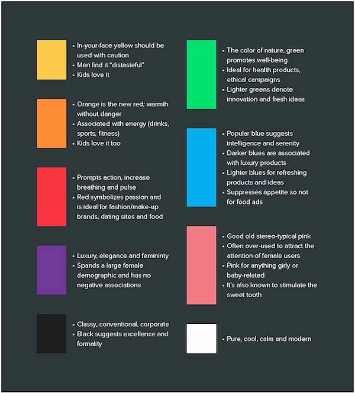
Keep in mind that the above chart will not hold true for every individual. However, this information is a good, research-based starting point for deciding your website colour choices.
Choosing your dominant ‘brand’ colour
Your website will have one main or dominant colour that will also be the main colour of your 'brand'.
For Bus Eireann, for example, the main brand colour is red. For Irish Rail, it is green. And for Ryanair, it is blue.
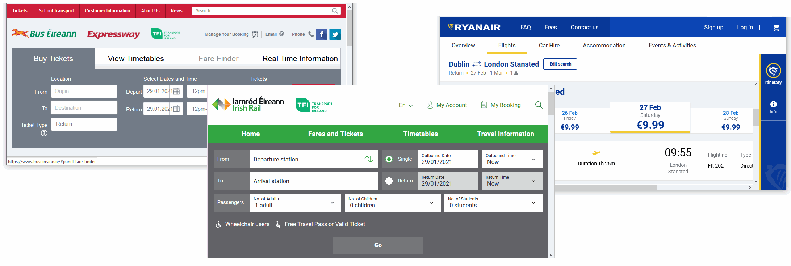
For choosing a modern-looking dominant colour, check out the Flat Design and Bootflat websites.
Creating your colour palette
In addition to your chosen dominant colour, you will typically select one, two or three other colours to create a colour combination or palette of colours that work together harmoniously.
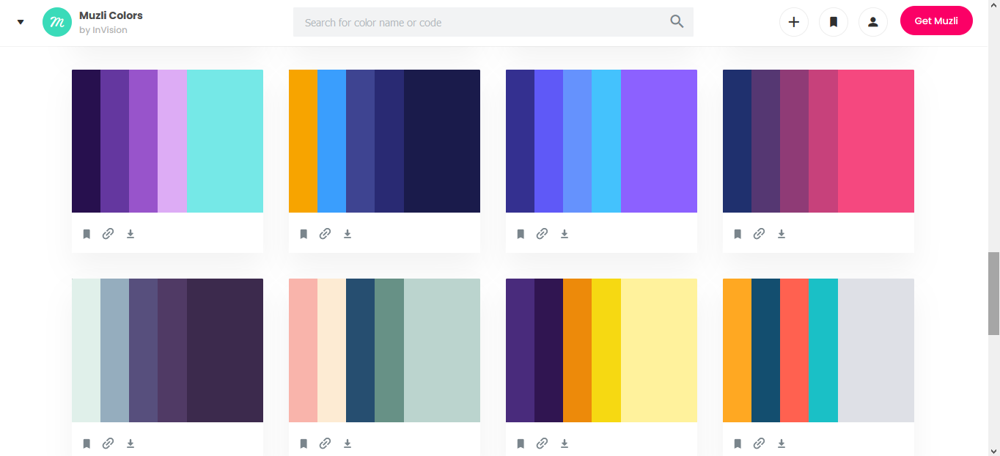
Three good websites for helping you decide on a colour palette are:
Colours: two common properties
The two most commonly used colour-related properties are text colour and background colour.
- background colour: You can use this to set the colour behind selected HTML elements, typically contaniner elements such as <header>, <section> or even <body>.
All backgrounds are coloured white by default.
As with text colours, TailwindCSS background colours are set using a combination of a base colour and a shade (darkness) number. You can see some examples below.
header { @apply bg-red-700 } section { @apply bg-zinc-100 }
- text colour: You use this to set the colour of text elements, such as headings, paragraphs and hyperlinks. By default, web browsers display all text in black.
In TailwindCSS, text colours are created using a combination of a base colour and a shade (darkness) number. You can see some examples below.
header h2 { @apply text-yellow-600 } section h2 { @apply text-blue-800 }
You can see the full TailwindCSS colour palette at the link below.
TailwindCSS colour documentation.
Aim for a harmonious combination of text and background colours in the main content area of your web pages.
Colour contrast and accessibility
Some colour combinations that are easy for most people to read are difficult or impossible for others. It is estimated that about 20% of web users have some form of limited vision.
In particular, about 1 in 12 men and 1 in 200 women have some form of 'colour blindness'. That means about 5% of your website visitors will not experience your site the way you intended.
There is little point in creating great text content for your website if a significant percentage of your website visitors struggle or cannot read what is on their screens.
An important factor is colour contrast – the difference between the foreground and background colours.
The WebAIM guidelines recommend a minimum contrast ratio of 4.5:1 for text on web pages. For headings and other large text, a contrast ratio of 3:1 is sufficient.
Notice the difference in the contrast ratios shown below. The image is from Google's web.dev website.
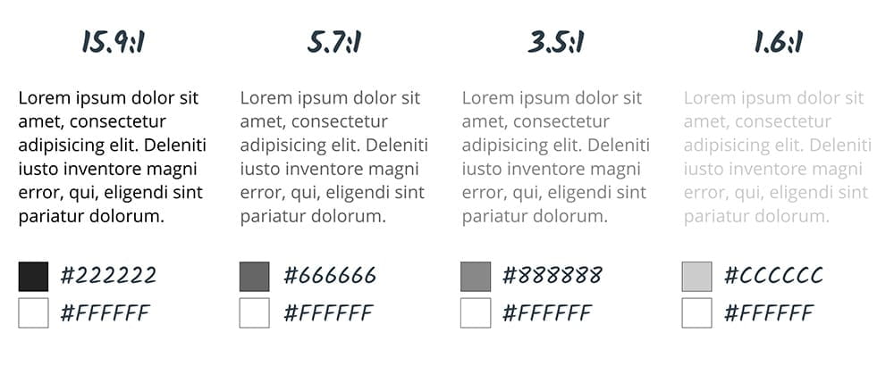
Adding colours to your four sample web pages
In previous Tutorials, you created four sample web pages with these file names:
index.html
exercises/page-1.html
exercises/page-2.html
exercises/page-3.html
Now you will add colour style rules to these four pages. Your finished web pages should look as shown below (only in a serif font).
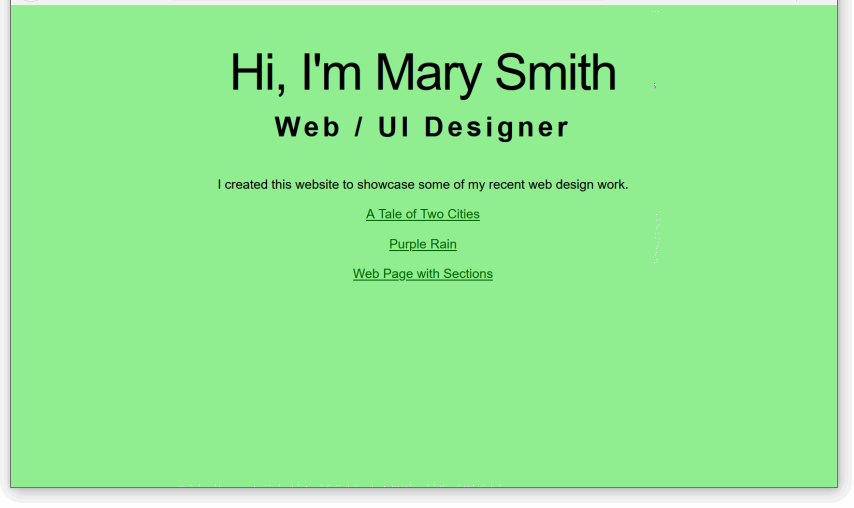
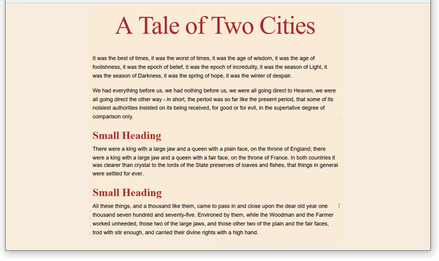
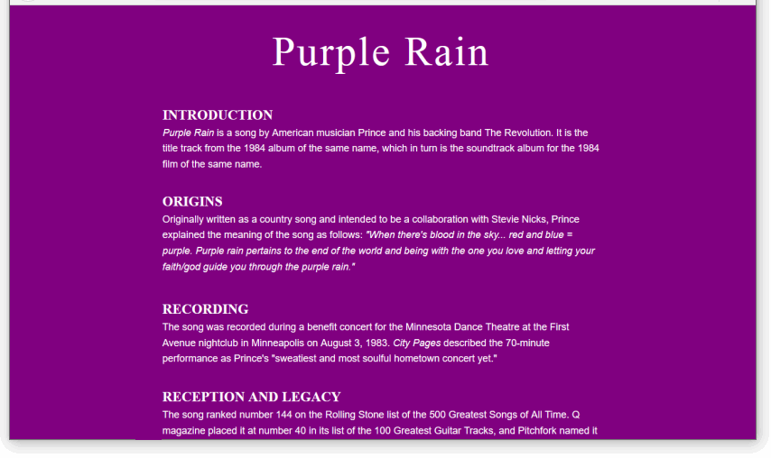
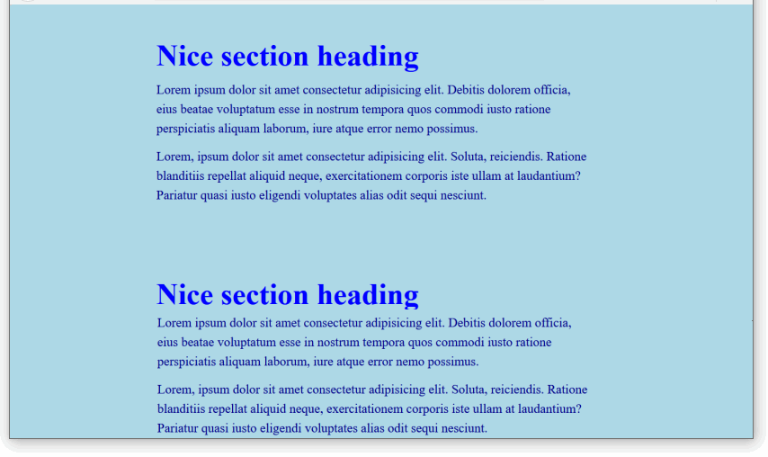
Updating page-1.html with colours
Follow these steps to add colours to your first sample web page page-1.html by updating the styles in the <head>.
- In VS Code, open page-1.html in your /exercises folder.
- Update the styles as shown below:
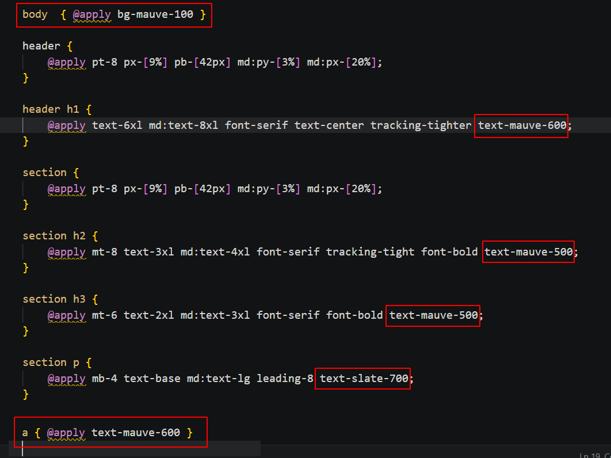
Save the page-2.html file and view it in your browser.
Updating page-2.html with colours
Follow these steps to add colours to your second sample web page page-2.html by updating the styles in the <head>.
- In VS Code, open page-2.html in your /exercises folder.
- Update the styles as shown below:
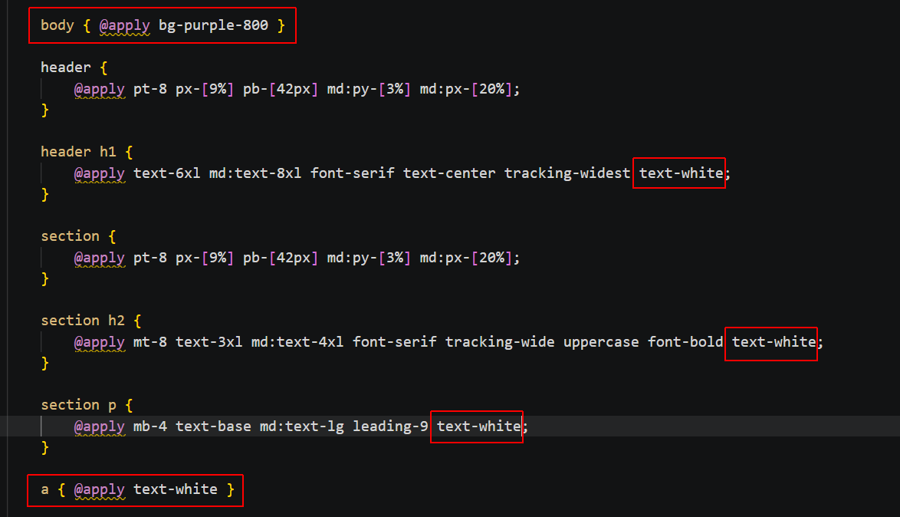
Save the page-2.html file and view it in your browser.
Updating page-3.html with colours
Follow these steps to add colours to your second sample web page page-3.html by updating the styles in the <head>.
- In VS Code, open page-3.html in your /exercises folder.
- Update the styles as shown below:
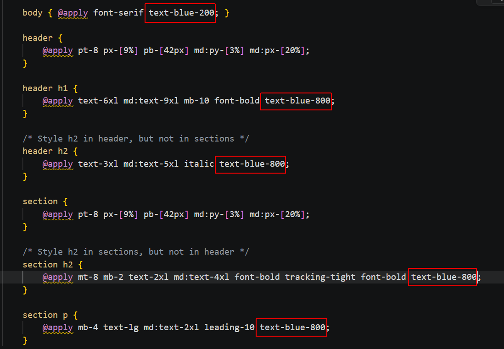
Save the page-3.html file and view it in your browser.
Updating index.html with colours
Follow these steps to add colours to your home web page index.html by updating the styles in the <head>.
- In VS Code, open index.html in your main folder.
- Update the styles as shown below:
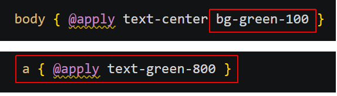
Save the index.html file and view it in your browser.
Uploading your files to GitHub
You are now ready to upload your work to your account on GitHub.
- Open a new tab in your web browser and go to github.com. If you are not already signed in to your GitHub account, sign in now.
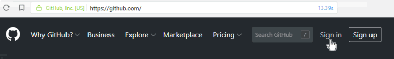
- On your GitHub home page, click the name of the repository (‘repo’) that holds your web pages. Its name will look as follows, where username is your chosen username on GitHub. username.github.io
- On the next GitHub screen displayed, near the right of the screen, you can see a button named Add file. Click on it.

- From the dropdown list displayed, choose the option Upload files.
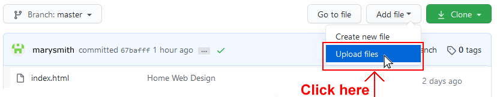
- In File Explorer (Windows) or Finder (Apple Mac), drag-and-drop your index.html file and your 📁 assets and 📁 exercises sub-folders to upload them to your repository on GitHub.
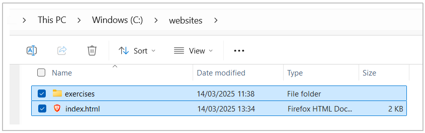
- Scroll down to the bottom of the GitHub screen, and accept or edit the short message (Add files via upload) in the Commit changes box.
- Finally, click the green Commit changes button to upload your entire exercises sub-folder and all the files it contains.
Your web pages are now published on GitHub at web addresses similar to the following, where username is the username you have chosen for your GitHub account:
https://username.github.io/index.html
Or simply:
https://username.github.io
And:
https://username.github.io/exercises/page-1.html
https://username.github.io/exercises/page-2.html
https://username.github.io/exercises/page-3.html
More learning resources
Tutorial Quiz
Tutorial Podcast
Further resources
Colour psychology 101: How colour affects perception of your website
By Safa Khudeira at the Intechnic Blog
How to use the psychology of colour to increase website conversions
By Neil Patel at the Neil Patel Blog
Understanding colour psychology for impactful web design
By Jerry Cao at DesignModo
The psychology of colour in web design
By Jenni McKinnon at the Envato Blog
Chapter 4: Color
From The Magic of CSS by Adam Schwartz
Color Hunt
A platform for colour inspiration with user-contributed colour combinations.
Muzli Colors
A colour palette/schemes generator.